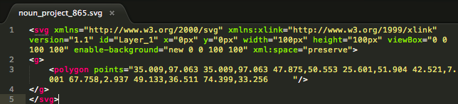

Keep the code, lose the clutter.
You can do this:
With this:
Instead of this:
These days we hear a lot about icon fonts or css only icons. Don't forget about the mighty SVG, it scales flawlessly, it is cross browser capabable, and at it's root, an SVG is just markup. Don't believe me? Take any .svg file and open it up in your text editor.
You can link to an svg with an img tag like so:
Or you can paste the svg code directly into your document:
The reason you might want to put the code straight into your HTML document is because now you can get crazy and style your svg with CSS. Hover over the images below to see what I mean.
Just because you can doesn't mean you should, but you can style the svg as a whole, the induvidual layers, the stroke, the fill etc. You can use css or javascript to control the size, you can give them classes and change them all at once. The developer has more control over the size and position. Oh and you don't have to make multiple HTTP requests either. No more sprite sheets, no more imageHover.png mumbo jumbo, no more preloading images, just load the code.
(((crickets)))
There is one issue I have with putting SVG code directly into my HTML document, it makes a mess. Taking SVGs from The Noun Project [2] yields weird tab indenting, extremely long layers, odd SVG headers and other such stuff I don't really want to see every time I make a quick change.
What I propose is not to clean those messy SVG's so that I can fold them nicely in Sublime Text 2, but rather take your dirty laundry and shove it under the bed. It will still be a mess when someone hits CNTRL+U, but your not cleaning your room for them anyway.
If you want to load in your SVG data as code you basically have two options:
I'm going to go with the javascript injection method since :before is not well supported, and it loses all of the advantages of css styling.
I think I'm going to follow bootstrap's lead and hijack the i tag.
Seems irreverant, but I honestly have used bootstrap so much I forgot that it is meant for italics. With the javascript method you can define the svg code as a string
and inject it like so:
Viola! Now that my room is clean I can get on to important things like homework.
Just another lazy Sunday project by @crisnoble for mksht.
Lightning Icon via:Matthew Hock, from The Noun Project
Built with ZURB Foundation, jQuery, Gists, and love.